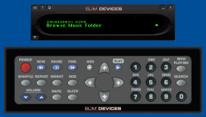

Softsqueeze emulates the Squeezebox and Transporter on Windows, Mac OSX and Unix computers. You can find instructions on how to run Softsqueeze using Java Web Start or as a Java applet below. You can find more information about Softsqueeze including FAQs, SSH guide and pre-releases at http://softsqueeze.sourceforge.net.
You'll be able to run SoftSqueeze on your local machine by following one or two simple steps, depending on whether Java is already installed on your machine.